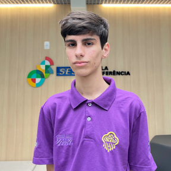

Biografia:
Meu nome é André e sou um jovem de 17 anos que atualmente cursa desenvolvimento de
sistemas
na escola SESI de Referência de Joinville. Penso muito em que carreira quero seguir,
porém
des de jovem sempre apaixonado por robotica, programação e tecnologia, por isso que escolhi o técnico que atualmente curso.
Vim de uma família onde minha mãe é professora e meu pai é empresario, então durante
toda minha vida
sempre
estive ligado tanto a educação quanto a ao veroz mercado de trabalho. Meu sonho como
pessoa é me tornar
desenvolvedor de jogos
e utilizados no ensino, atualmente já tenho projetos dentro dessa area,e pretendo
continuar seguindo ela
durante o futuro da minha jornada de trabalho.
Atualmente tenho meu artigo cientifo sobre o uso de jogos sérios para a educação de mudanças climaticas, porém trabalho muito atualmente com projetos externos,
então não tenho muito experiência no mundo do trabalho como programador mesmo.